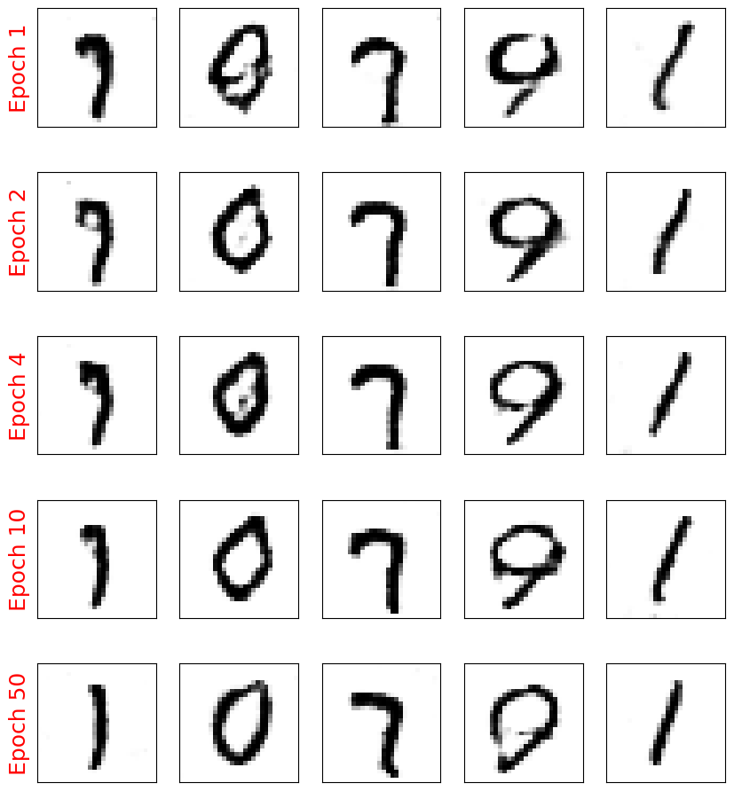
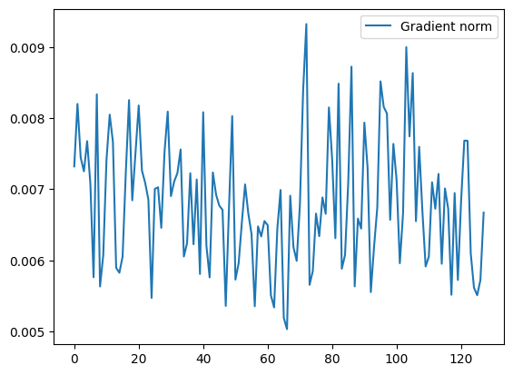
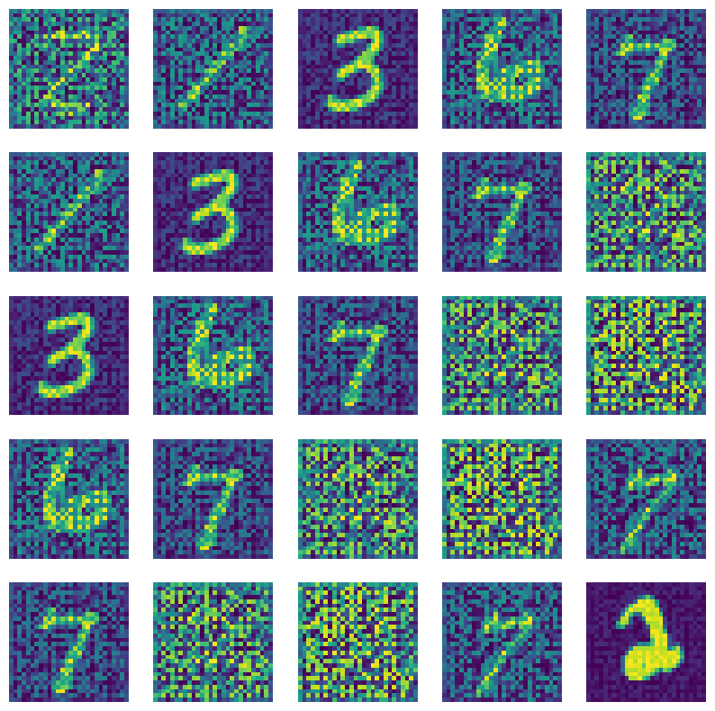
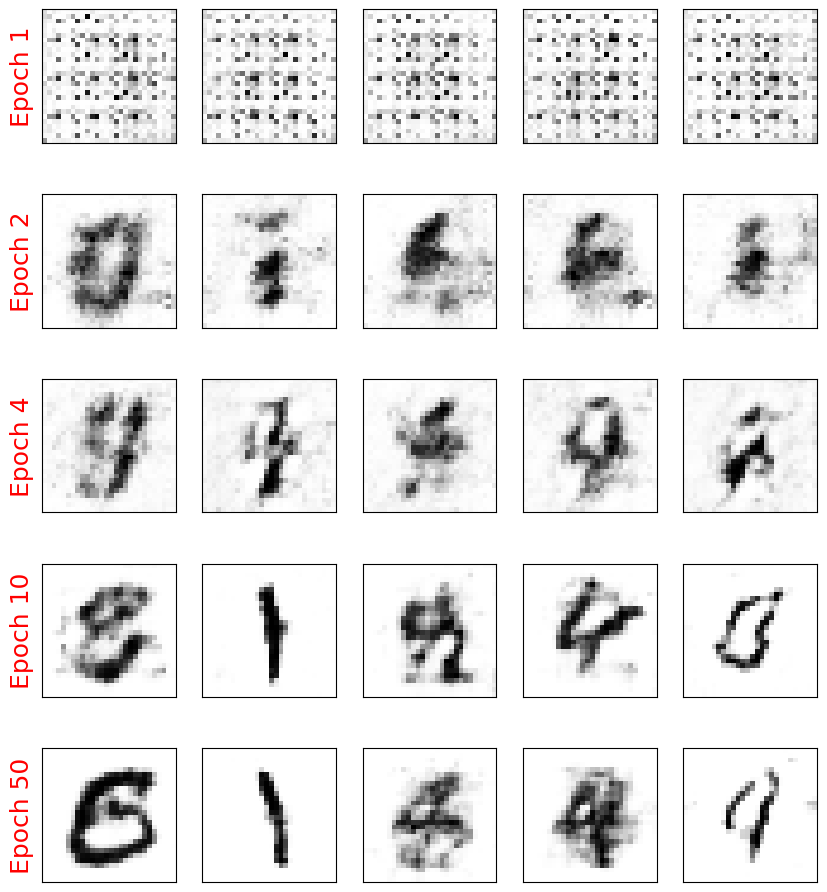

24. Generative Adverserial Network#
from IPython.display import Image
%matplotlib inline
24.1. Improving the quality of synthesized images using DCGAN#
24.1.1. Recap on to Vanilla GAN#
Basic Structure: In a Vanilla GAN, there are two primary components—a Generator (G) and a Discriminator (D). The Generator attempts to create realistic-looking fake samples from random noise, while the Discriminator tries to distinguish real samples from the fake ones. Both components play a minimax game, constantly improving to “outsmart” each other.
Objective: The objective of the GAN is to reach a Nash equilibrium where the Generator can produce indistinguishable fake samples, and the Discriminator can no longer tell real from fake with high accuracy.
24.1.2. Deep Convolutional GANs#
Deep Convolutional GANs (DCGANs) introduced convolutional layers to both the Generator and Discriminator, revolutionizing how GANs handle image generation. Source: Unsupervised Representation Learning with Deep Convolutional Generative Adversarial Networks
How DCGAN Improves over Vanilla GAN:
Architecture Adjustments: DCGAN replaces fully connected layers with convolutional and transposed convolutional layers, which help capture spatial hierarchies in images, improving output quality.
Batch Normalization: By adding batch normalization, DCGAN helps stabilize training and accelerates convergence. Batch normalization in both the Generator and Discriminator layers helps address training instabilities.
Removing Pooling Layers: Instead of pooling, DCGAN uses strided convolutions, giving the network more flexibility and reducing information loss, thus addressing mode collapse partially by better preserving details across image generations.

But how can we go from 1D to a 2D picture?
24.2. What is Transposed convolution?#
Transposed convolution, also known as deconvolution or fractionally strided convolution, is a technique used in deep learning to upsample feature maps, effectively increasing their spatial dimensions. This operation is particularly valuable in tasks such as image generation, semantic segmentation, and super-resolution, where reconstructing high-resolution outputs from lower-resolution inputs is essential.
24.2.1. Convolution and Its Inverse#
In standard convolution operations, a kernel (filter) slides over an input feature map, producing an output feature map with reduced spatial dimensions, depending on parameters like stride and padding. Transposed convolution aims to reverse this process, expanding the spatial dimensions of the input feature map to produce a larger output.
24.2.2. Mechanism of Transposed Convolution#
The transposed convolution process can be understood through the following steps:
24.2.3. a. Input Expansion#
The input feature map is expanded by inserting zeros between its elements, effectively increasing its dimensions. The amount of expansion depends on the desired output size and the stride used in the original convolution.
24.2.4. b. Kernel Application#
A convolutional kernel is then applied to this expanded input. Unlike standard convolution, where the kernel moves over the input, in transposed convolution, the kernel is applied to the expanded input to produce overlapping regions in the output.
24.2.5. c. Overlap Summation#
The overlapping regions in the output are summed to produce the final upsampled feature map.
This process effectively increases the spatial dimensions of the input feature map, allowing the network to learn how to upsample features in a learnable manner.
24.2.6. Mathematical Formulation#
The output dimensions of a transposed convolution can be calculated using the following formula:
Where:
n: Spatial dimensions of the input feature map.
s: Step size with which the kernel is applied.
m: Dimensions of the convolutional kernel.
p: Number of pixels added to the input feature map borders.
op: Ouput Padding. Additional pixels added to the output feature map dimensions.
This formula helps determine the spatial dimensions of the output feature map, ensuring it matches the desired size.
24.2.7. Implementation in Deep Learning Frameworks#
Most deep learning frameworks provide built-in functions for transposed convolution:
PyTorch:
torch.nn.ConvTranspose2dapplies a 2D transposed convolution operator over an input image composed of several input planes.TensorFlow/Keras:
tf.keras.layers.Conv2DTransposeis used to apply a 2D transposed convolution layer.
Here is demonstraion of deconvolution operation

24.3. Batch normalization#
This is as well essential for DCGAN implementation. We had discussed about Bactch norm in Lecture 13

24.4. Implementing the generator and discriminator#
The generator for MNIST digit dataset will be

The discriminator for MNIST digit dataset will be

import torch
print(torch.__version__)
print("GPU Available:", torch.cuda.is_available())
if torch.cuda.is_available():
device = torch.device("cuda:0")
else:
device = "cpu"
2.5.0+cu121
GPU Available: True
import torch.nn as nn
import numpy as np
import matplotlib.pyplot as plt
%matplotlib inline
24.5. Train the DCGAN model#
import torchvision
from torchvision import transforms
image_path = './'
transform = transforms.Compose([
transforms.ToTensor(),
transforms.Normalize(mean=(0.5), std=(0.5))
])
mnist_dataset = torchvision.datasets.MNIST(root=image_path,
train=True,
transform=transform,
download=True)
batch_size = 128
torch.manual_seed(1)
np.random.seed(1)
## Set up the dataset
from torch.utils.data import DataLoader
mnist_dl = DataLoader(mnist_dataset, batch_size=batch_size,
shuffle=True, drop_last=True)
def make_generator_network(input_size, n_filters):
#nn.ConvTranspose2d(in_channels = input_size,
# out_channels = n_filters*4,
# kernel_size = 4,
# stride = 1,
# padding = 0,
# output_padding = 0,
# bias = False
# )
model = nn.Sequential(
nn.ConvTranspose2d(input_size, n_filters*4, 4, 1, 0,
bias=False),
nn.BatchNorm2d(n_filters*4),
nn.LeakyReLU(0.2),
nn.ConvTranspose2d(n_filters*4, n_filters*2, 3, 2, 1, bias=False),
nn.BatchNorm2d(n_filters*2),
nn.LeakyReLU(0.2),
nn.ConvTranspose2d(n_filters*2, n_filters, 4, 2, 1, bias=False),
nn.BatchNorm2d(n_filters),
nn.LeakyReLU(0.2),
nn.ConvTranspose2d(n_filters, 1, 4, 2, 1, bias=False),
nn.Tanh())
return model
class Discriminator(nn.Module):
def __init__(self, n_filters):
super().__init__()
self.network = nn.Sequential(
nn.Conv2d(1, n_filters, 4, 2, 1, bias=False),
nn.LeakyReLU(0.2),
nn.Conv2d(n_filters, n_filters*2, 4, 2, 1, bias=False),
nn.BatchNorm2d(n_filters * 2),
nn.LeakyReLU(0.2),
nn.Conv2d(n_filters*2, n_filters*4, 3, 2, 1, bias=False),
nn.BatchNorm2d(n_filters*4),
nn.LeakyReLU(0.2),
nn.Conv2d(n_filters*4, 1, 4, 1, 0, bias=False),
nn.Sigmoid())
def forward(self, input):
output = self.network(input)
return output.view(-1, 1).squeeze(0)
z_size = 100
image_size = (28, 28)
n_filters = 32
gen_model = make_generator_network(z_size, n_filters).to(device)
print(gen_model)
disc_model = Discriminator(n_filters).to(device)
print(disc_model)
Sequential(
(0): ConvTranspose2d(100, 128, kernel_size=(4, 4), stride=(1, 1), bias=False)
(1): BatchNorm2d(128, eps=1e-05, momentum=0.1, affine=True, track_running_stats=True)
(2): LeakyReLU(negative_slope=0.2)
(3): ConvTranspose2d(128, 64, kernel_size=(3, 3), stride=(2, 2), padding=(1, 1), bias=False)
(4): BatchNorm2d(64, eps=1e-05, momentum=0.1, affine=True, track_running_stats=True)
(5): LeakyReLU(negative_slope=0.2)
(6): ConvTranspose2d(64, 32, kernel_size=(4, 4), stride=(2, 2), padding=(1, 1), bias=False)
(7): BatchNorm2d(32, eps=1e-05, momentum=0.1, affine=True, track_running_stats=True)
(8): LeakyReLU(negative_slope=0.2)
(9): ConvTranspose2d(32, 1, kernel_size=(4, 4), stride=(2, 2), padding=(1, 1), bias=False)
(10): Tanh()
)
Discriminator(
(network): Sequential(
(0): Conv2d(1, 32, kernel_size=(4, 4), stride=(2, 2), padding=(1, 1), bias=False)
(1): LeakyReLU(negative_slope=0.2)
(2): Conv2d(32, 64, kernel_size=(4, 4), stride=(2, 2), padding=(1, 1), bias=False)
(3): BatchNorm2d(64, eps=1e-05, momentum=0.1, affine=True, track_running_stats=True)
(4): LeakyReLU(negative_slope=0.2)
(5): Conv2d(64, 128, kernel_size=(3, 3), stride=(2, 2), padding=(1, 1), bias=False)
(6): BatchNorm2d(128, eps=1e-05, momentum=0.1, affine=True, track_running_stats=True)
(7): LeakyReLU(negative_slope=0.2)
(8): Conv2d(128, 1, kernel_size=(4, 4), stride=(1, 1), bias=False)
(9): Sigmoid()
)
)
## Loss function and optimizers:
loss_fn = nn.BCELoss()
g_optimizer = torch.optim.Adam(gen_model.parameters(), 0.0003)
d_optimizer = torch.optim.Adam(disc_model.parameters(), 0.0002)
def create_noise(batch_size, z_size, mode_z):
if mode_z == 'uniform':
input_z = torch.rand(batch_size, z_size, 1, 1)*2 - 1
elif mode_z == 'normal':
input_z = torch.randn(batch_size, z_size, 1, 1)
return input_z
## Train the discriminator
def d_train(x):
disc_model.zero_grad()
# Train discriminator with a real batch
batch_size = x.size(0)
x = x.to(device)
d_labels_real = torch.ones(batch_size, 1, device=device)
d_proba_real = disc_model(x)
d_loss_real = loss_fn(d_proba_real, d_labels_real)
# Train discriminator on a fake batch
input_z = create_noise(batch_size, z_size, mode_z).to(device)
g_output = gen_model(input_z)
d_proba_fake = disc_model(g_output)
d_labels_fake = torch.zeros(batch_size, 1, device=device)
d_loss_fake = loss_fn(d_proba_fake, d_labels_fake)
# gradient backprop & optimize ONLY D's parameters
d_loss = d_loss_real + d_loss_fake
d_loss.backward()
d_optimizer.step()
return d_loss.data.item(), d_proba_real.detach(), d_proba_fake.detach()
## Train the generator
def g_train(x):
gen_model.zero_grad()
batch_size = x.size(0)
input_z = create_noise(batch_size, z_size, mode_z).to(device)
g_labels_real = torch.ones((batch_size, 1), device=device)
g_output = gen_model(input_z)
d_proba_fake = disc_model(g_output)
g_loss = loss_fn(d_proba_fake, g_labels_real)
# gradient backprop & optimize ONLY G's parameters
g_loss.backward()
g_optimizer.step()
return g_loss.data.item()
mode_z = 'uniform'
fixed_z = create_noise(batch_size, z_size, mode_z).to(device)
def create_samples(g_model, input_z, batch_size):
g_output = g_model(input_z)
images = torch.reshape(g_output, (batch_size, *image_size))
return (images+1)/2.0
epoch_samples = []
num_epochs = 50
torch.manual_seed(1)
for epoch in range(1, num_epochs+1):
gen_model.train()
d_losses, g_losses = [], []
for i, (x, _) in enumerate(mnist_dl):
d_loss, d_proba_real, d_proba_fake = d_train(x)
d_losses.append(d_loss)
g_losses.append(g_train(x))
print(f'Epoch {epoch:03d} | Avg Losses >>'
f' G/D {torch.FloatTensor(g_losses).mean():.4f}'
f'/{torch.FloatTensor(d_losses).mean():.4f}')
gen_model.eval()
epoch_samples.append(
create_samples(gen_model, fixed_z, batch_size).detach().cpu().numpy())
Epoch 001 | Avg Losses >> G/D 4.3853/0.1600
Epoch 002 | Avg Losses >> G/D 3.6382/0.2976
Epoch 003 | Avg Losses >> G/D 3.4910/0.3260
Epoch 004 | Avg Losses >> G/D 3.4770/0.3314
Epoch 005 | Avg Losses >> G/D 3.5152/0.3350
Epoch 006 | Avg Losses >> G/D 3.5486/0.3222
Epoch 007 | Avg Losses >> G/D 3.5563/0.3272
Epoch 008 | Avg Losses >> G/D 3.6236/0.3157
Epoch 009 | Avg Losses >> G/D 3.5947/0.3217
Epoch 010 | Avg Losses >> G/D 3.6332/0.3226
Epoch 011 | Avg Losses >> G/D 3.6489/0.3174
Epoch 012 | Avg Losses >> G/D 3.6870/0.3155
Epoch 013 | Avg Losses >> G/D 3.7142/0.3097
Epoch 014 | Avg Losses >> G/D 3.8028/0.3117
Epoch 015 | Avg Losses >> G/D 3.7953/0.3159
Epoch 016 | Avg Losses >> G/D 3.7584/0.3093
Epoch 017 | Avg Losses >> G/D 3.8095/0.3089
Epoch 018 | Avg Losses >> G/D 3.8293/0.3101
Epoch 019 | Avg Losses >> G/D 3.8663/0.3118
Epoch 020 | Avg Losses >> G/D 3.8494/0.3051
Epoch 021 | Avg Losses >> G/D 3.8735/0.3056
Epoch 022 | Avg Losses >> G/D 3.8852/0.3004
Epoch 023 | Avg Losses >> G/D 3.9025/0.3006
Epoch 024 | Avg Losses >> G/D 3.9661/0.2997
Epoch 025 | Avg Losses >> G/D 3.9085/0.2949
Epoch 026 | Avg Losses >> G/D 3.9770/0.2928
Epoch 027 | Avg Losses >> G/D 3.9744/0.2934
Epoch 028 | Avg Losses >> G/D 4.0054/0.2960
Epoch 029 | Avg Losses >> G/D 4.0223/0.2892
Epoch 030 | Avg Losses >> G/D 4.0046/0.2883
Epoch 031 | Avg Losses >> G/D 4.0431/0.2903
Epoch 032 | Avg Losses >> G/D 4.0637/0.2854
Epoch 033 | Avg Losses >> G/D 4.0736/0.2877
Epoch 034 | Avg Losses >> G/D 4.0783/0.2904
Epoch 035 | Avg Losses >> G/D 4.0502/0.2877
Epoch 036 | Avg Losses >> G/D 4.0461/0.2814
Epoch 037 | Avg Losses >> G/D 4.0805/0.2857
Epoch 038 | Avg Losses >> G/D 4.0930/0.2821
Epoch 039 | Avg Losses >> G/D 4.0983/0.2781
Epoch 040 | Avg Losses >> G/D 4.1561/0.2684
Epoch 041 | Avg Losses >> G/D 4.1690/0.2773
Epoch 042 | Avg Losses >> G/D 4.1739/0.2763
Epoch 043 | Avg Losses >> G/D 4.1944/0.2783
Epoch 044 | Avg Losses >> G/D 4.1720/0.2729
Epoch 045 | Avg Losses >> G/D 4.2406/0.2655
Epoch 046 | Avg Losses >> G/D 4.2385/0.2808
Epoch 047 | Avg Losses >> G/D 4.2077/0.2674
Epoch 048 | Avg Losses >> G/D 4.2867/0.2701
Epoch 049 | Avg Losses >> G/D 4.2695/0.2722
Epoch 050 | Avg Losses >> G/D 4.2255/0.2619
selected_epochs = [1, 2, 4, 10, 50]
fig = plt.figure(figsize=(10, 14))
for i,e in enumerate(selected_epochs):
for j in range(5):
ax = fig.add_subplot(6, 5, i*5+j+1)
ax.set_xticks([])
ax.set_yticks([])
if j == 0:
ax.text(
-0.06, 0.5, f'Epoch {e}',
rotation=90, size=18, color='red',
horizontalalignment='right',
verticalalignment='center',
transform=ax.transAxes)
image = epoch_samples[e-1][j]
ax.imshow(image, cmap='gray_r')
# plt.savefig('figures/ch17-dcgan-samples.pdf')
plt.show()

24.5.1. Limitations of DCGAN#
DCGAN still suffers from some mode collapse and instability in complex data settings. While it stabilizes the learning process, it doesn’t fundamentally address the underlying adversarial loss limitations. But certainly improves the quality of reconstruction due to its ability to capture spatial correaltion quickly than Vanilla GAN.
24.6. How to assess the quality of Generation?#
How can we measure the quality of our generations. More importantly, How can one determine if the model simply did not memorize the patterns and are reproducing them?
24.6.1. Dissimilarity measures between two distributions#
Check out other metrics for dis-similarity from the reference book.

An example is shown here

24.6.2. Steps to extract TVD (One of the ways)#
Generate a set of
Nimages using the generatorExtract using a simple CNN a feature set for both generated images and real images
Perform a PCA to futher push down the dimensions to a single variable
X. Caveat – One can also simply use the CNN To output a single valued function (eg:tanh)Compare the distributions now using the formula above
import torch
import torch.nn as nn
import numpy as np
from sklearn.neighbors import KernelDensity
from sklearn.decomposition import PCA
from sklearn.preprocessing import StandardScaler
from torchvision import datasets, transforms
from torch.utils.data import DataLoader
# Define data normalization
def normalize_data(images):
mean = images.mean()
std = images.std()
return (images - mean) / std
# Define feature extraction (you could replace this with your own CNN)
class SimpleCNN(nn.Module):
def __init__(self):
super(SimpleCNN, self).__init__()
self.conv1 = nn.Conv2d(1, 32, kernel_size=3, stride=1, padding=1)
self.pool = nn.MaxPool2d(2, 2)
self.fc1 = nn.Linear(32 * 14 * 14, 50) # Output feature dimension of 50
def forward(self, x):
x = self.pool(torch.relu(self.conv1(x)))
x = x.view(-1, 32 * 14 * 14)
x = torch.relu(self.fc1(x))
return x
# Estimate density with Kernel Density Estimation (KDE)
def estimate_density(features):
scaler = StandardScaler()
features_scaled = scaler.fit_transform(features)
pca = PCA(n_components=20) # Reduce dimensionality for KDE
features_pca = pca.fit_transform(features_scaled)
kde = KernelDensity(kernel='gaussian', bandwidth=0.5).fit(features_pca)
return kde
# Calculate Total Variation Distance
def compute_tvd(kde_real, kde_gen, samples=1000):
sample_real = kde_real.sample(samples)
sample_gen = kde_gen.sample(samples)
log_dens_real = kde_real.score_samples(sample_real)
log_dens_gen = kde_gen.score_samples(sample_gen)
tvd = 0.5 * np.mean(np.abs(np.exp(log_dens_real) - np.exp(log_dens_gen)))
return tvd
noise_dim = 100
noise = torch.randn(batch_size, noise_dim)
generated_images = create_samples(gen_model, fixed_z, batch_size) # Assuming generator outputs images in the shape [N, 1, 28, 28]
generated_images = transforms.Normalize((0.5,), (0.5,))(generated_images).view(-1, 1, 28, 28).cpu()
# Normalize real and generated images
real_images = next(iter(mnist_dl))[0]
real_images = real_images.view(-1, 1, 28, 28)
# Initialize and load pre-trained feature extractor
feature_extractor = SimpleCNN()
feature_extractor.eval()
# Extract features for real and generated images
with torch.no_grad():
real_features = feature_extractor(real_images).cpu().numpy()
gen_features = feature_extractor(generated_images).cpu().numpy()
# Estimate densities
kde_real = estimate_density(real_features)
kde_gen = estimate_density(gen_features)
# Compute TVD
tvd_value = compute_tvd(kde_real, kde_gen)
print(f"Total Variation Distance between real and generated datasets: {tvd_value}")
Total Variation Distance between real and generated datasets: 7.794342648436242e-08
24.7. Implementing WGAN-GP to train the DCGAN model#
24.7.1. Key Drawbacks of Vanilla GAN#
This is a great paper to read on the problems of Vanilla GAN Source: Why are Generative Adversarial Networks so Fascinating and Annoying?
Mode Collapse:
What it is: Mode collapse occurs when the Generator starts producing very similar outputs regardless of input variation. This causes it to ignore certain parts of the data distribution, leading to a lack of diversity in generated samples.
Why it happens: The adversarial training can make the Generator overfit to a few patterns the Discriminator fails to distinguish, resulting in repetitive outputs.
Training Instability:
What it is: GAN training is notoriously unstable, with the Generator and Discriminator often oscillating without convergence.
Why it happens: The loss function doesn’t offer a clear gradient signal, often making it hard to strike a balance in the adversarial game. Tiny changes can lead to massive shifts in both the Generator’s and Discriminator’s behaviors, making tuning difficult.
Vanishing Gradient Problem:
What it is: When the Discriminator becomes too strong, it easily classifies fake samples, leading to very small gradients for the Generator. Consequently, the Generator’s updates become negligible, halting improvement.
Why it happens: The traditional cross-entropy loss used in GANs can suffer from saturating gradients when the Discriminator outperforms the Generator.
24.7.2. Wasserstein Distance: A Better Metric for GANs#
The Wasserstein distance (Earth Mover’s Distance) is a metric that measures the “effort” needed to transform one distribution into another. It provides a more meaningful way to measure the similarity between the real and generated data distributions. Unlike traditional GAN loss, which uses Jensen-Shannon divergence, the Wasserstein distance leads to more stable gradients, enabling more consistent training.
24.7.3. Kantorovich-Rubinstein Duality#
WGAN uses the Kantorovich-Rubinstein duality to approximate the Wasserstein distance between two distributions:
where ( P ) and ( Q ) are the real and generated distributions, and the supremum is taken over all 1-Lipschitz functions ( f ).
In WGAN, the discriminator (called the Critic) is trained to act as the function ( f ), providing higher scores for real samples and lower scores for generated ones. The difference in Critic outputs for real and generated samples approximates the Wasserstein distance.
24.7.4. How WGAN (Wasserstein GAN) Overcomes GAN Challenges#
Overview of WGAN: The WGAN model replaces the traditional cross-entropy loss with the Wasserstein loss, also known as the Earth-Mover distance, which measures the distance between real and generated data distributions more effectively. Source: Wasserstein GAN
Advantages of WGAN:
Better Gradient Flow: By minimizing the Wasserstein distance, WGAN ensures that the gradient signal remains robust even when the Discriminator excels. This helps avoid the vanishing gradient problem and leads to more stable training.
Less Mode Collapse: WGAN’s loss function provides smoother gradients, reducing mode collapse issues. The Wasserstein distance gradually pulls the Generator closer to producing realistic samples across diverse outputs.
Clip Weights for Stability: WGAN implements weight clipping in the Discriminator to ensure that it adheres to a Lipschitz constraint, which is crucial for calculating the Wasserstein distance. This further stabilizes the training.
Limitations of WGAN:
Weight Clipping Sensitivity: Setting the clipping range is delicate; inappropriate values can still lead to gradient issues. To address this, further improvements (e.g., WGAN-GP) introduced gradient penalty to enforce the Lipschitz constraint more naturally.
However, With WGAN we still have exploding gradients problem due to the clipping of weights of the `critic’ (Discriminator).
We will be implementing Wasserstein GAN with Gradient Penalty
24.8. Wasserstein GAN with Gradient Penalty (WGAN-GP)#
The WGAN minimizes the Wasserstein distance (or Earth Mover’s Distance, EMD) between the real and generated data distributions, providing better gradient flow and addressing some of GAN’s limitations.
However, implementing WGAN comes with its own challenges, specifically enforcing the 1-Lipschitz constraint on the discriminator, which is necessary to approximate the Wasserstein distance. The Wasserstein GAN with Gradient Penalty (WGAN-GP) improves upon WGAN by using a gradient penalty to enforce the 1-Lipschitz constraint on the Critic, leading to even more stable training and higher-quality results.
24.9. Motivation for WGAN-GP#
24.9.1. Enforcing the 1-Lipschitz Constraint: WGAN vs. WGAN-GP#
For the Kantorovich-Rubinstein duality to hold, \( f \) must be 1-Lipschitz, meaning the Critic’s gradient norm should be at most 1. WGAN originally enforced this by clipping the weights of the Critic to a small range (e.g., \([-0.01, 0.01]\)), but this led to degraded performance and limited capacity for the Critic.
WGAN-GP introduced an improved approach, using a gradient penalty to enforce the 1-Lipschitz constraint in a smoother and more stable way.
24.10. How WGAN-GP Works#
24.10.1. 1. Gradient Penalty#
The gradient penalty enforces the 1-Lipschitz constraint by penalizing the norm of the gradients of the Critic’s output with respect to its input. This is done as follows:
Interpolate Between Real and Generated Samples:
For each pair of real and generated samples, an interpolated sample is created by linearly interpolating between the real and fake data points.
The interpolated data point \( \text{interpolated} \) is computed as:
\[ \text{interpolated} = \alpha \cdot \text{real} + (1 - \alpha) \cdot \text{generated} \]where \( \alpha \) is a random number between 0 and 1.
Compute the Critic’s Output on Interpolated Samples:
The Critic outputs a score for these interpolated samples.
Compute the Gradient of the Critic’s Output:
The gradient of the Critic’s output with respect to the interpolated sample is calculated. The norm of this gradient (i.e., its magnitude) should ideally be close to 1.
Apply the Gradient Penalty:
The penalty term is computed as:
\[ \text{gradient penalty} = \lambda \cdot \mathbb{E}\left[(\|\nabla_{\text{interpolated}} D(\text{interpolated})\|_2 - 1)^2\right] \]where \( \lambda \) is a coefficient that controls the strength of the penalty.
24.10.2. 2. Critic Loss in WGAN-GP#
The Critic’s objective in WGAN-GP combines the Wasserstein distance term and the gradient penalty:
This loss encourages the Critic to assign high scores to real samples and low scores to fake samples while enforcing the 1-Lipschitz constraint.
24.10.3. 3. Generator Loss in WGAN-GP#
The Generator’s objective is to minimize the Wasserstein distance, which is equivalent to:
By minimizing this, the Generator attempts to produce samples that the Critic cannot distinguish from real samples.
def make_generator_network_wgan(input_size, n_filters):
model = nn.Sequential(
nn.ConvTranspose2d(input_size, n_filters*4, 4, 1, 0,
bias=False),
nn.InstanceNorm2d(n_filters*4),
nn.LeakyReLU(0.2),
nn.ConvTranspose2d(n_filters*4, n_filters*2, 3, 2, 1, bias=False),
nn.InstanceNorm2d(n_filters*2),
nn.LeakyReLU(0.2),
nn.ConvTranspose2d(n_filters*2, n_filters, 4, 2, 1, bias=False),
nn.InstanceNorm2d(n_filters),
nn.LeakyReLU(0.2),
nn.ConvTranspose2d(n_filters, 1, 4, 2, 1, bias=False),
nn.Tanh())
return model
class DiscriminatorWGAN(nn.Module):
def __init__(self, n_filters):
super().__init__()
self.network = nn.Sequential(
nn.Conv2d(1, n_filters, 4, 2, 1, bias=False),
nn.LeakyReLU(0.2),
nn.Conv2d(n_filters, n_filters*2, 4, 2, 1, bias=False),
nn.InstanceNorm2d(n_filters * 2),
nn.LeakyReLU(0.2),
nn.Conv2d(n_filters*2, n_filters*4, 3, 2, 1, bias=False),
nn.InstanceNorm2d(n_filters*4),
nn.LeakyReLU(0.2),
nn.Conv2d(n_filters*4, 1, 4, 1, 0, bias=False),
nn.Sigmoid())
def forward(self, input):
output = self.network(input)
return output.view(-1, 1).squeeze(0)
gen_model = make_generator_network_wgan(z_size, n_filters).to(device)
disc_model = DiscriminatorWGAN(n_filters).to(device)
g_optimizer = torch.optim.Adam(gen_model.parameters(), 0.0002)
d_optimizer = torch.optim.Adam(disc_model.parameters(), 0.0002)
from torch.autograd import grad as torch_grad
def gradient_penalty(real_data, generated_data, lambda_gp = 10, plot = False):
batch_size = real_data.size(0)
# Calculate interpolation
alpha = torch.rand(real_data.shape[0], 1, 1, 1, requires_grad=True, device=device)
# This creates a real+fake mixed sample
interpolated = alpha * real_data + (1 - alpha) * generated_data
# Calculate probability of interpolated examples
proba_interpolated = disc_model(interpolated)
# Calculate gradients of probabilities with respect to examples
gradients = torch_grad(outputs=proba_interpolated, inputs=interpolated,
grad_outputs=torch.ones(proba_interpolated.size(), device=device),
create_graph=True, retain_graph=True)[0]
if (plot):
plt.figure(1)
#plt.plot(proba_interpolated.detach().cpu().numpy(), label = "Interpolated")
#print (gradients.norm(2, dim=1).detach().cpu().numpy().shape)
plt.plot(gradients.norm(2, dim=1).detach().cpu().numpy().mean(axis = 2).mean(axis = 1),
label = "Gradient norm"
)
plt.legend()
plt.show()
fig, axes = plt.subplots(nrows = 5, ncols = 5, figsize = (10, 10))
for idx, ax in np.ndenumerate(axes):
ax.imshow(interpolated.detach().cpu().numpy()[sum(idx),0])
ax.axis("off")
plt.show()
gradients = gradients.view(batch_size, -1)
gradients_norm = gradients.norm(2, dim=1)
return lambda_gp * ((gradients_norm - 1)**2).mean()
# Lets test it
batch_size = 128
real_data = next(iter(mnist_dl))[0]
real_data = real_data.to(device)
input_z = create_noise(batch_size, z_size, mode_z).to(device)
generated_data = gen_model(input_z)
gradient_penalty(real_data, generated_data, plot = True)


tensor(5.6894, device='cuda:0', grad_fn=<MulBackward0>)
## Train the discriminator
def d_train_wgan(x):
disc_model.zero_grad()
batch_size = x.size(0)
x = x.to(device)
# Calculate probabilities on real and generated data
d_real = disc_model(x)
input_z = create_noise(batch_size, z_size, mode_z).to(device)
g_output = gen_model(input_z)
d_generated = disc_model(g_output)
d_loss = d_generated.mean() - d_real.mean() + gradient_penalty(x.data, g_output.data)
d_loss.backward()
d_optimizer.step()
return d_loss.data.item()
## Train the generator
def g_train_wgan(x):
gen_model.zero_grad()
batch_size = x.size(0)
input_z = create_noise(batch_size, z_size, mode_z).to(device)
g_output = gen_model(input_z)
d_generated = disc_model(g_output)
g_loss = -d_generated.mean()
# gradient backprop & optimize ONLY G's parameters
g_loss.backward()
g_optimizer.step()
return g_loss.data.item()
epoch_samples_wgan = []
lambda_gp = 10.0
num_epochs = 50
torch.manual_seed(1)
critic_iterations = 5
for epoch in range(1, num_epochs+1):
gen_model.train()
d_losses, g_losses = [], []
for i, (x, _) in enumerate(mnist_dl):
for _ in range(critic_iterations):
d_loss = d_train_wgan(x)
d_losses.append(d_loss)
g_losses.append(g_train_wgan(x))
print(f'Epoch {epoch:03d} | D Loss >>'
f' {torch.FloatTensor(d_losses).mean():.4f}')
gen_model.eval()
epoch_samples_wgan.append(
create_samples(gen_model, fixed_z, batch_size).detach().cpu().numpy())
Epoch 001 | D Loss >> -0.4650
Epoch 002 | D Loss >> -0.4887
Epoch 003 | D Loss >> -0.5441
Epoch 004 | D Loss >> -0.5931
Epoch 005 | D Loss >> -0.5919
Epoch 006 | D Loss >> -0.5693
Epoch 007 | D Loss >> -0.5574
Epoch 008 | D Loss >> -0.5460
Epoch 009 | D Loss >> -0.5275
Epoch 010 | D Loss >> -0.5211
Epoch 011 | D Loss >> -0.5167
Epoch 012 | D Loss >> -0.5184
Epoch 013 | D Loss >> -0.5092
Epoch 014 | D Loss >> -0.5111
Epoch 015 | D Loss >> -0.4983
Epoch 016 | D Loss >> -0.4986
Epoch 017 | D Loss >> -0.5001
Epoch 018 | D Loss >> -0.4957
Epoch 019 | D Loss >> -0.4979
Epoch 020 | D Loss >> -0.4960
Epoch 021 | D Loss >> -0.4945
Epoch 022 | D Loss >> -0.4889
Epoch 023 | D Loss >> -0.4855
Epoch 024 | D Loss >> -0.4947
Epoch 025 | D Loss >> -0.4885
Epoch 026 | D Loss >> -0.4920
Epoch 027 | D Loss >> -0.4915
Epoch 028 | D Loss >> -0.4846
Epoch 029 | D Loss >> -0.4864
Epoch 030 | D Loss >> -0.4894
Epoch 031 | D Loss >> -0.4898
Epoch 032 | D Loss >> -0.4877
Epoch 033 | D Loss >> -0.4887
Epoch 034 | D Loss >> -0.4881
Epoch 035 | D Loss >> -0.4901
Epoch 036 | D Loss >> -0.4888
Epoch 037 | D Loss >> -0.4877
Epoch 038 | D Loss >> -0.4901
Epoch 039 | D Loss >> -0.4880
Epoch 040 | D Loss >> -0.4923
Epoch 041 | D Loss >> -0.4906
Epoch 042 | D Loss >> -0.4904
Epoch 043 | D Loss >> -0.4830
Epoch 044 | D Loss >> -0.4874
Epoch 045 | D Loss >> -0.4947
Epoch 046 | D Loss >> -0.4966
Epoch 047 | D Loss >> -0.4887
Epoch 048 | D Loss >> -0.4885
Epoch 049 | D Loss >> -0.4925
Epoch 050 | D Loss >> -0.4889
selected_epochs = [1, 2, 4, 10, 50]
# selected_epochs = [1, 10, 20, 30, 50, 70]
fig = plt.figure(figsize=(10, 14))
for i,e in enumerate(selected_epochs):
for j in range(5):
ax = fig.add_subplot(6, 5, i*5+j+1)
ax.set_xticks([])
ax.set_yticks([])
if j == 0:
ax.text(
-0.06, 0.5, f'Epoch {e}',
rotation=90, size=18, color='red',
horizontalalignment='right',
verticalalignment='center',
transform=ax.transAxes)
image = epoch_samples_wgan[e-1][j]
ax.imshow(image, cmap='gray_r')
plt.show()
